Remote operation of ground vehicles presents fundamental challenges in situational awareness. An operator who is not physically present loses sensory feedback that enables precise, confident driving—including peripheral vision and the perception of acceleration. Conventional teleoperation systems provide only a flat video feed, limiting effectiveness in hazardous-environment operations and safety intervention for autonomous vehicles.
The Cal Poly Pomona Autonomous Vehicles Lab has developed a bidirectional haptic teleoperation system that restores this missing feedback. The test platform carries three ZED X stereo cameras and an Xsens MTi-680G IMU, managed by an onboard NVIDIA Jetson Orin. The operator sits in a D-BOX motion-enabled simulation chair with a Thrustmaster racing wheel and pedals, facing three monitors that reproduce a driver’s natural field of view. Steering and pedal inputs are sent to the vehicle in real time, while measured accelerations drive the motion chair so the operator feels the forces acting on the vehicle.
All communication runs over a Tailscale VPN rather than line-of-sight radio, so the operator and vehicle can be separated by any distance. This poster presents the system architecture, engineering challenges of low-latency video and control over the internet, and applications of immersive teleoperation to autonomous vehicle development.
When a driver operates a vehicle remotely, they lose the cues that make driving intuitive—wide peripheral vision, body motion, and the feel of acceleration. That loss makes remote driving slower, less precise, and more fatiguing, which limits use in hazardous environments, remote recovery, and autonomy safety backup.
This project restores those senses through a bidirectional haptic teleoperation system. Three coupled channels run over Tailscale VPN:
Three parallel pipelines connect the Windows sim-chair station to the vehicle’s NVIDIA Jetson Orin (Ubuntu 22.04, ROS 2 Humble).
Technologies: Jetson Orin · ROS 2 Humble · ZED X ×3 · Xsens MTi-680G · D-BOX LiveMotion · Tailscale · SDL2 · Python / C++
| Capability | Status | Notes |
|---|---|---|
| Remote driving (wheel/pedals) | Working | v1 protocol live; v2 controller coded — needs sender rebuild + deploy |
| Three live camera streams | Working | JPEG/TCP 960×600 @ 15 fps; H.265 receiver coded — needs ZED stream_server on Jetson |
| D-BOX SDK | Ready | Sine test works; WashoutFilter + ImuHapticReceiver coded — needs build |
| Real vehicle motion in chair | Not wired | imu_bridge + C++ receiver coded — needs deploy + tune |
| Smooth natural control | Degrading | Motor debug plan — hardware A/B still required |
| Full simultaneous demo | Unverified | Ops templates ready — needs cold-boot rehearsal + soak test |
Baseline measurements (2026-07-27, Tailscale DERP path between sim chair and Jetson):
A working remote-driving link and live three-camera panoramic video are in place today. Motion-chair haptics and driving smoothness remain the main integration milestones. Completing the IMU → washout → D-BOX path and verifying a full simultaneous run will demonstrate a low-cost, internet-scale immersive teleoperation stack built on consumer simulation hardware and an AVL robotics platform—supporting hazardous-environment ops and autonomy safety intervention.
We thank the Cal Poly Pomona Autonomous Vehicles Laboratory and Dr. Behnam Bahr for faculty mentorship, and AVL teammates who support Jetson bring-up, vehicle integration, and lab operations.
Autonomous Vehicles Laboratory · Cal Poly Pomona
CARS 2026 · Thursday, August 6, 2026 · Bronco Student Center